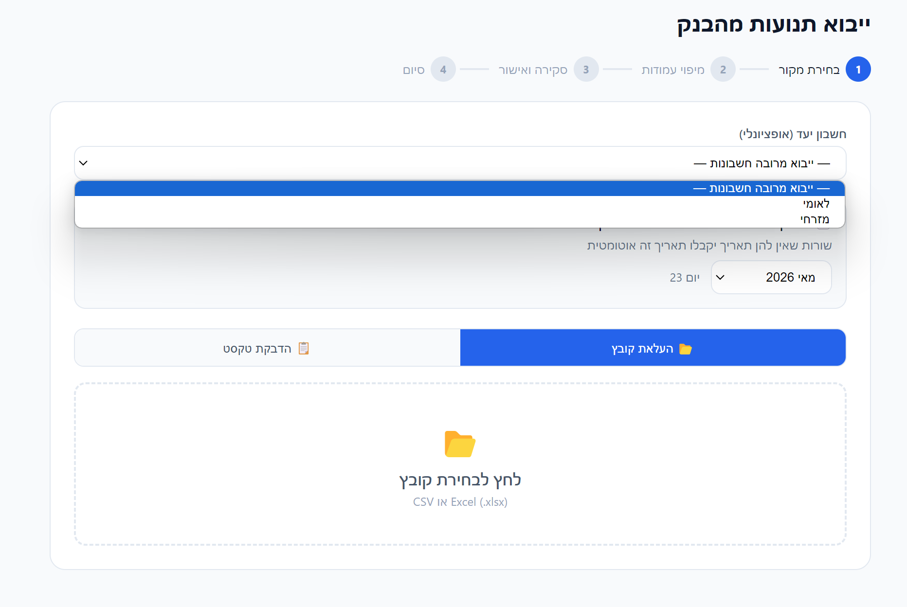
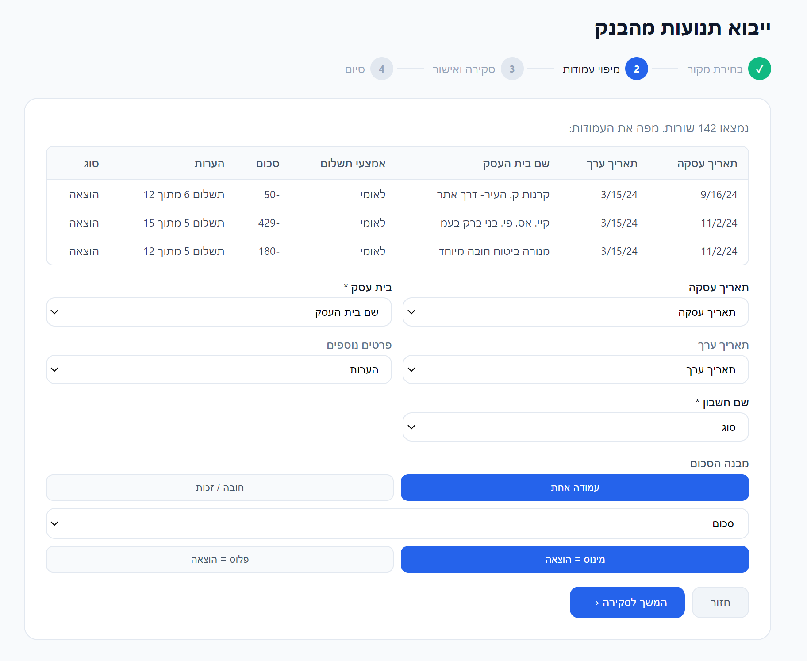
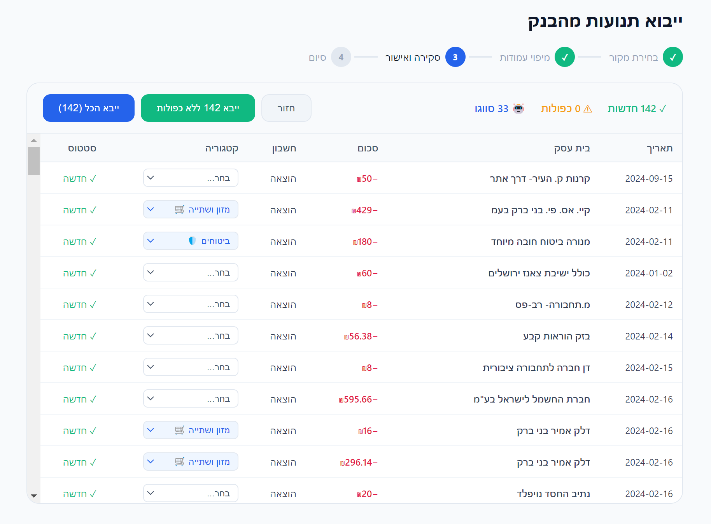
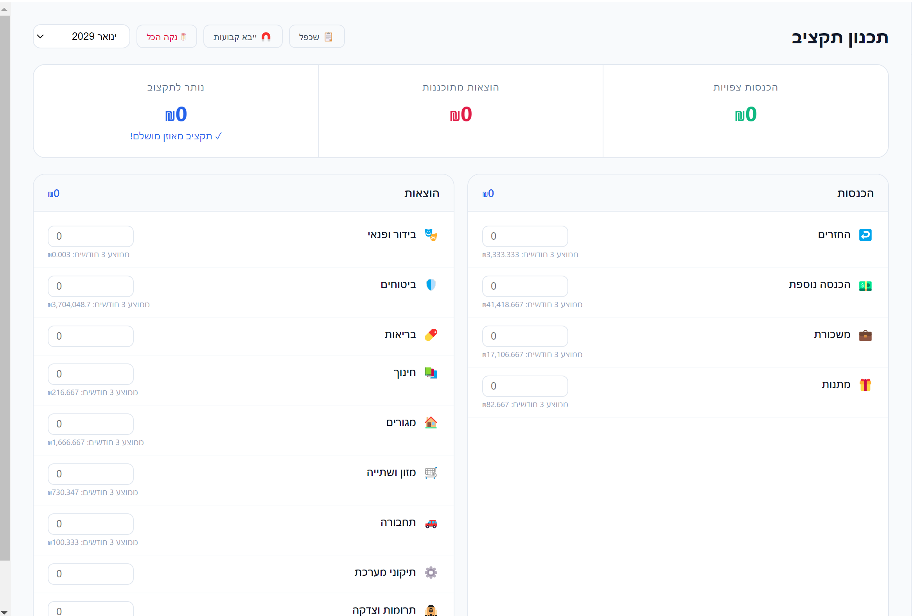
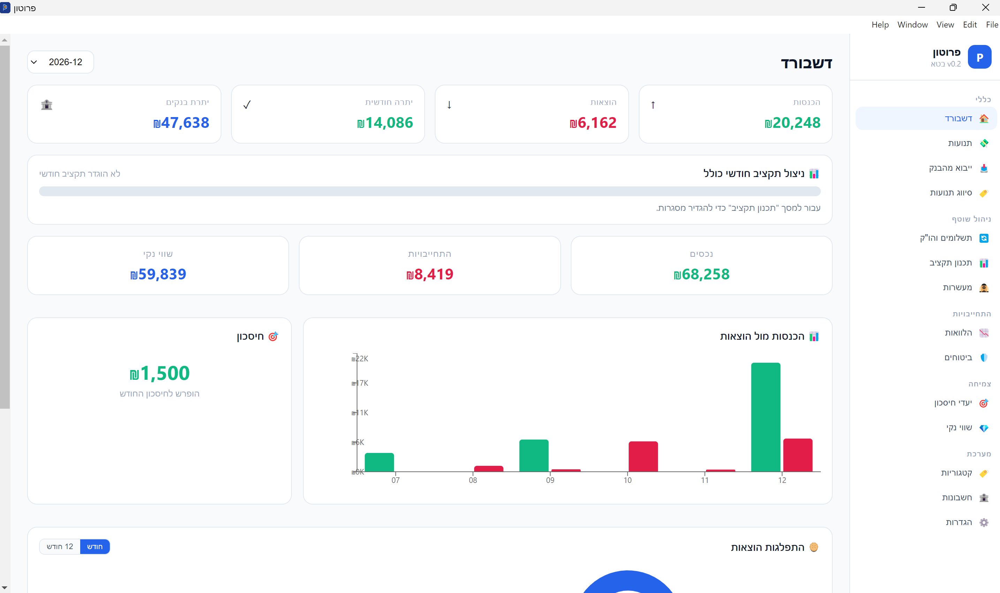

תוכן עניינים
הורד את קובץ ההתקנה מהלינק ולחץ פעמיים להתקנה (אם הורדת מהדרייב חלץ והתקן). זהו. אין צורך ב-Node.js, Python, או שום דבר אחר — הכל כבר בפנים.
AppData\Roaming\proton\proton.db. אפשר לגבות מתפריט ההגדרות.לך לחשבונות בסיידבר ולחץ "+ הוסף חשבון".

- הזן שם לחשבון (למשל: "לאומי", "מזומן", "ויזה")
- בחר סוג: עו"ש / אשראי / מזומן
- הזן יתרת פתיחה — כמה יש לך עכשיו בחשבון. חשוב לדיוק!
הורד קובץ Excel מאתר הבנק שלך (בדרך כלל תחת "תנועות בחשבון" → "ייצוא לאקסל"). אחר כך לך לייבוא מהבנק.
שלב א — בחירת מקור: העלה את הקובץ ובחר את החשבון שאליו הוא שייך.

שלב ב — מיפוי עמודות: תראה תצוגה מקדימה של הנתונים. בחר איזו עמודה היא התאריך, איזו הסכום ואיזו שם העסק.

שלב ג — סקירה ואישור: המערכת מזהה כפילויות ומציעה קטגוריות אוטומטיות. עבור על הרשומות, תקן אם צריך, ולחץ ייבא.

לך לסיווג תנועות. כאן מופיעות כל התנועות שעוד לא סווגו.

זרימת העבודה המהירה:
- לחץ Tab — עובר לתנועה הבאה
- הקלד אות — מסנן את הדרופדאון (למשל "מ" → "מזון ושתייה")
- לחץ Enter — שומר ועובר לרשומה הבאה
לאחר שייבאת תנועות, לך לתכנון תקציב. המערכת מציגה ממוצע של 3 חודשים אחרונים לכל קטגוריה — זו נקודת ההתחלה שלך.

- הגדר מסגרת לכל קטגוריה
- השינויים נשמרים אוטומטית
- הדשבורד יראה לך אחוז ניצול בזמן אמת

הדשבורד מציג: הכנסות, הוצאות, יתרה חודשית, יתרת בנקים, ניצול תקציב, שווי נקי, גרף השוואתי ומעשרות.
מה הלאה? ✨
עכשיו שהבסיס קיים, אפשר לצלול לעומק:
הלוואות • ביטוחים • יעדי חיסכון • שווי נקי • מעשרות